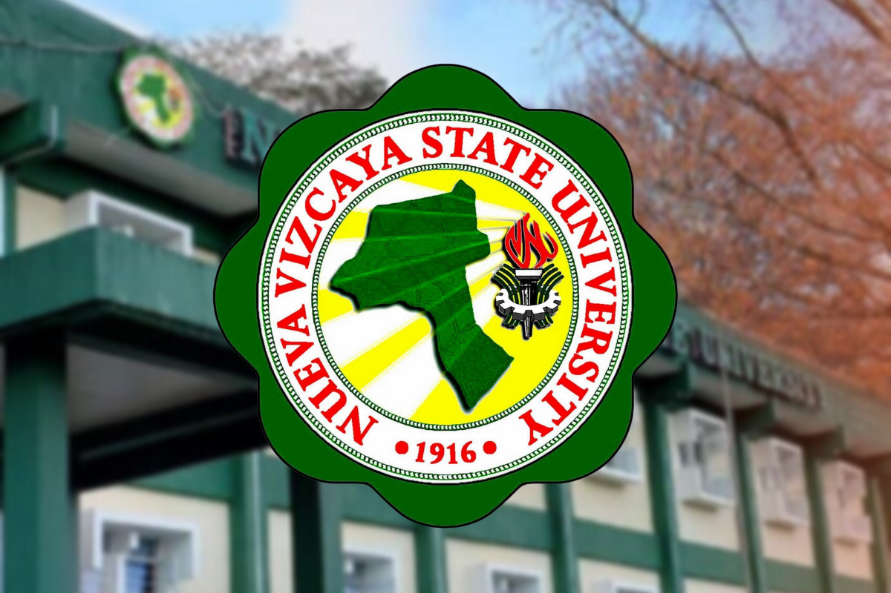

WELCOME TO NVSU
Established in 1916, Nueva Vizcaya State University is a non-profit public higher
The Nueva Vizcaya State University is a public university in the Philippines.
echnology, education and other related fields. It is mandated to provide advanced instruction and
professional training in agriculture, arts, science,
It is also mandated to undertake research and extension services, and provide progressive leadership in its area of specialization.[1] Its main campus is located in Bayombong, Nueva Vizcaya, Philippines.[2]
education institution located in the urban setting of the medium-sized town of Bayombong
(population range of 10,000-49,999 inhabitants), Cagayan Valley.
This institution has also branch campuses in the following location(s): Bambang. Officially accredited
and/or recognized by the Commission on Higher Education, Philippines,
Nueva Vizcaya State University (NSVU) is a medium-sized (uniRank enrollment range: 8,000-8,999 students)
coeducational higher education institution.